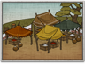

Requires
- Buildings: 
Enables
- Buildings:

Basic Building Statistics (can be modified by difficulty level, arts, skills, traits and retainers)
- Cost: 2000
- +200 to wealth from commerce in this province
- +10 per turn to town growth from commerce within this province
- Provides food: 1
- Enables recruitment of Rank 1 junsatsushi
Clan Effects
- Each economy chain building enables you to sustain one additional junsatsushi (to a maximum of 5)
Description
The hungry belly consumes all thoughts of anything else.
Food stores improve the amount of food available in a province, and the province's growth. No more food is grown, but less of what is produced is lost in storage. In the medieval world, including Japan, the harvest was the vitally important time of year. Only the very brave or the very thoughtless campaigned when there was a harvest to be gathered in. The amount of food gathered and then stored over winter determined exactly how many people would be alive come spring. Even then, poor storage conditions could result in the crop mouldering away in damp conditions. In a good year, everyone in a village would have enough to eat. A bad year, either because of poor weather or, worse still, rapacious bandits or the lord's tax collectors, would mean starvation and death. The elderly and the children would be the first to die, then the weak and sick among the adults. Even the lord in his castle could feel the pinch of hunger in his belly if the crop failed.